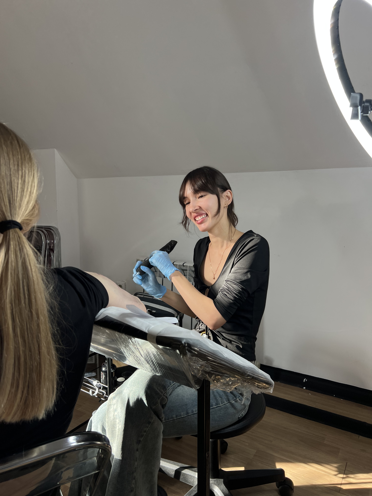

Базовое обучение
профессиональной татуировки
длительность обучения от 6 дней
дни проведения занятия согласовываются с вами
дни проведения занятия согласовываются с вами
ЧТО ВХОДИТ:
- тату оборудование: расходные материалы, выбор тату машинки и игл
- практические занятия: 2 практики на искусственной коже, работа с реальными клиентами под моим наблюдением 2 занятия
- выдача сертификата: по окончании курса выдаются сертификат об успешном завершении обучения
- подарочный тату бокс с базовыми расходными материалами
- теория: анатомия кожи, гигиена и безопасность
48.000 руб

Углубленное обучение
профессиональной татуировки
длительность обучения от 10 дней
количество практик неограниченно
(проводятся столько, сколько понадобится)
дни проведения занятия согласовываются с вами
количество практик неограниченно
(проводятся столько, сколько понадобится)
дни проведения занятия согласовываются с вами
ЧТО ВХОДИТ:
- теория: анатомия кожи, гигиена и безопасность
- разбор предпочитаемого стиля в татуировках
- тату оборудование: расходные материалы, выбор тату машинки и игл
- количество практических занятий неограниченно: практики на искусственной коже, работа с реальными клиентами под моим наблюдением
- выдача сертификата: по окончании курса выдаются сертификат об успешном завершении обучения
- поддержка после обучения, предоставление рабочего места в тату студии «Спасточка»
- обратная связь и оценка
- подарочный тату бокс с базовыми расходными материалами
60.000 руб